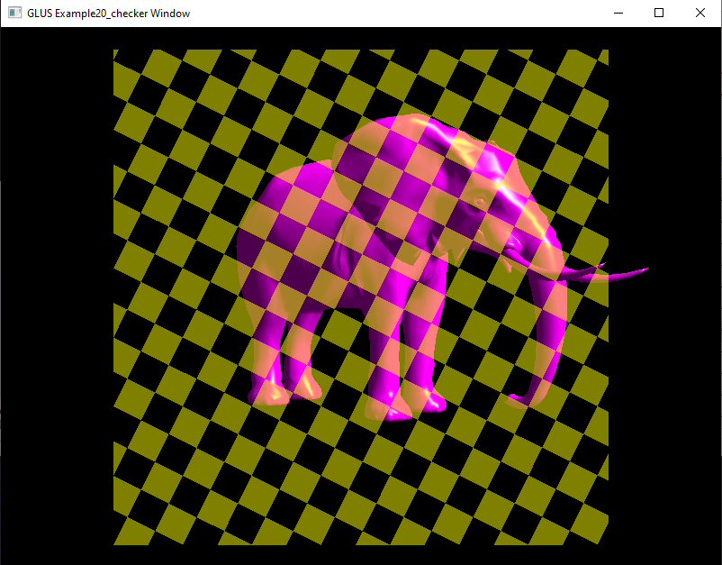
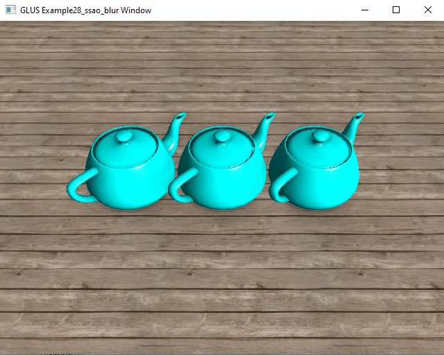
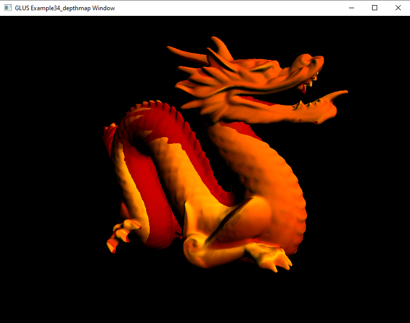
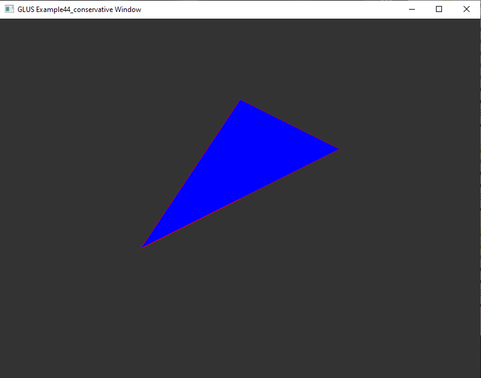

Norberts OpenGL Tutorials ( quality C OpenGL demos ) |
2023 |
| 45 OpenGL examples from dead easy to really interesting. |
| All is adapted to my cmake toolchain and completly built from source. |
| Not a single external dependency for Windows 64. |
| I deactivated all EGL and GLES stuff to a _trash folder and compressed it for later. |
| It purely uses Desktop OpenGL, aka WGL and is Windows only so far. |
| I just wanted to run them and see if they are worth my time. And they are. |
| The adaption to my toolchain was painless, but libGLUS is stupid in regard to relative paths. |
| Also the error messages were not really helpful, thatswhy i added some and commented code to make it work. |
- GLEW ( Desktop OpenGL using WGL )
- GLFW ( open hardware accelerated windows, used by many Benni projects )
- GLUS ( small 3d engine lib + image loading, probably by Norbert, d.k. exactly)
- GLUS is C only and has reduced file size
- Its really stupid with relative paths, cant load MTL (material) and Tex files that reside next to OBJ files
- You have to use relative paths to your exe, meaning when moving MTL,OBJ and TEX files you have to adapt ALL paths yourself
- The interesting parts are the shaders. Like cloth-sim, ocean, water, FXAA and some more.
- I removed/extracted one example: Example33_brdf which alone increased the project size by 180MBytes!.
|
|
This is a fully standalone project that everybody can build without having to rely on find_package()
or what you have or have not installed on your system.
|
|
The tutorials should interest any 3D graphics programmer.
|
|
Projects contains high quality textures (wood_plank, canyon) and models. Makes the biggest part of download.
|
Download: (full) Sources + Binaries (without Example33_brdf) |
 ./cpp_Norberts_OpenGL_Tutorials.7z48MB
./cpp_Norberts_OpenGL_Tutorials.7z48MB |
Download: Example33_brdf (full) Sources + Binaries |
|
./cpp_Norberts_OpenGL_Tutorials_Example33.7z35MB |
Screenshot: cpp_Norberts_OpenGL_06_texture.png |
|
Screenshot: cpp_Norberts_OpenGL_07_normmap.png |
|
Screenshot: cpp_Norberts_OpenGL_08_cubemap.png |
 |
Screenshot: cpp_Norberts_OpenGL_09_particle.png |
 |
Screenshot: cpp_Norberts_OpenGL_10_duplicate.png |
|
Screenshot: cpp_Norberts_OpenGL_11_glass.png |
|
Screenshot: cpp_Norberts_OpenGL_12_shadow.png |
|
Screenshot: cpp_Norberts_OpenGL_13_tess.png |
|
Screenshot: cpp_Norberts_OpenGL_14_passes.png |
|
Screenshot: cpp_Norberts_OpenGL_15_water.png |
|
Screenshot: cpp_Norberts_OpenGL_16_phong.png |
|
Screenshot: cpp_Norberts_OpenGL_17_clip.png |
|
Screenshot: cpp_Norberts_OpenGL_18_phong.png |
|
Screenshot: cpp_Norberts_OpenGL_19_mirror.png |
|
Screenshot: cpp_Norberts_OpenGL_20_checker.png |
|  |
Screenshot: cpp_Norberts_OpenGL_21_texture.png |
|
Screenshot: cpp_Norberts_OpenGL_22_shadowvolume.png |
|
Screenshot: cpp_Norberts_OpenGL_23_parallax.png |
|
Screenshot: cpp_Norberts_OpenGL_24_erode.png |
|
Screenshot: cpp_Norberts_OpenGL_25_phong.png |
|
Screenshot: cpp_Norberts_OpenGL_26_fur.png |
|
Screenshot: cpp_Norberts_OpenGL_27_shadow.png |
|
Screenshot: cpp_Norberts_OpenGL_28_ssao.png |
|  |
Screenshot: cpp_Norberts_OpenGL_29_raytrace.png |
|
Screenshot: cpp_Norberts_OpenGL_31_deferred.png |
|
Screenshot: cpp_Norberts_OpenGL_32_brdf.png |
|
Screenshot: cpp_Norberts_OpenGL_34_depthmap.png |
|  |
Screenshot: cpp_Norberts_OpenGL_35_depth_peel.png |
|
Screenshot: cpp_Norberts_OpenGL_37_raymarching.png |
|
Screenshot: cpp_Norberts_OpenGL_39_pipeline.png |
 |
Screenshot: cpp_Norberts_OpenGL_40_cloth.png |
|
Screenshot: cpp_Norberts_OpenGL_41_ocean.png |
|
Screenshot: cpp_Norberts_OpenGL_42_fxaa.png |
|
Screenshot: cpp_Norberts_OpenGL_43_phong.png |
|
Screenshot: cpp_Norberts_OpenGL_44_conservative.png |
|  |
Screenshot: cpp_Norberts_OpenGL_45_voxelize.png |
|